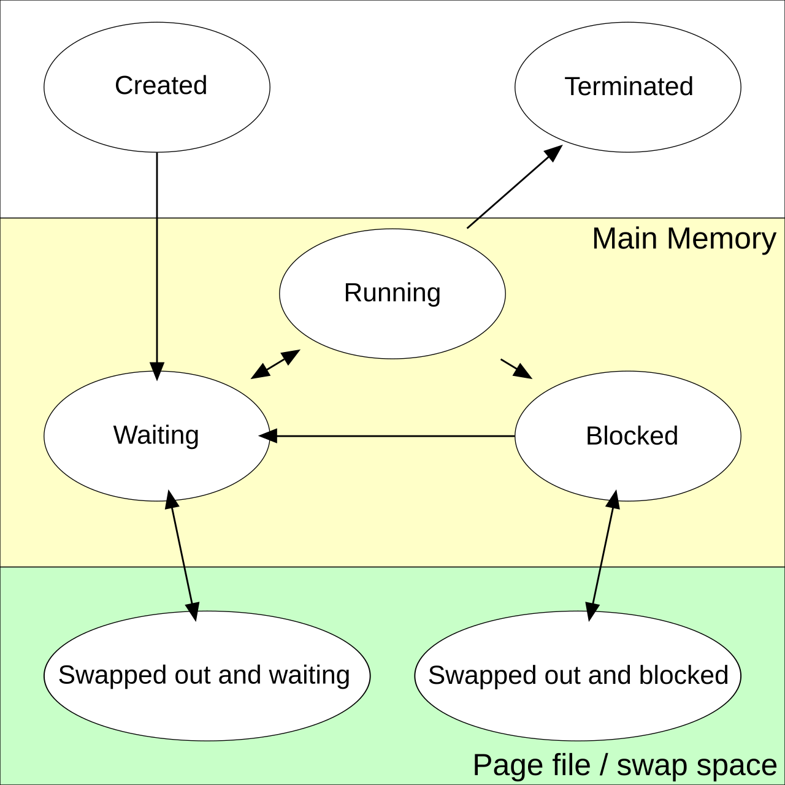
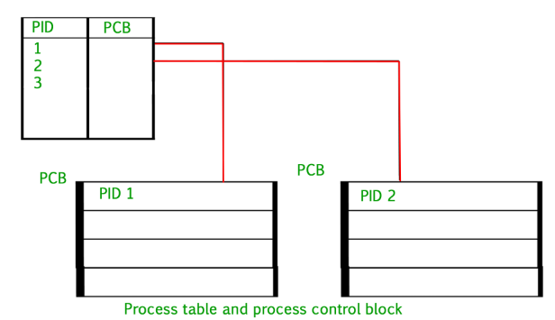
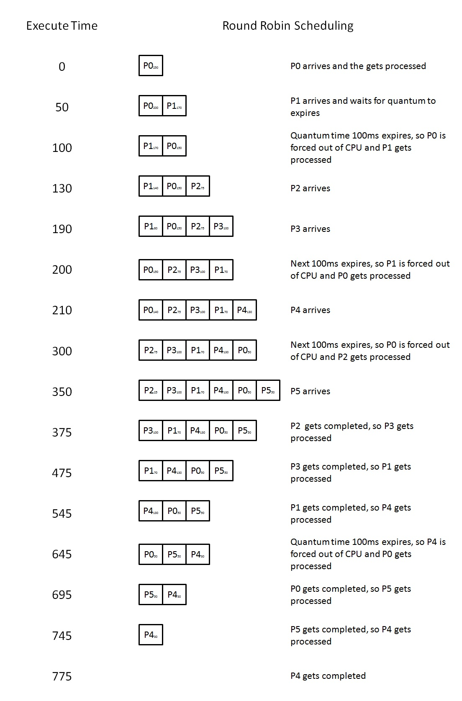
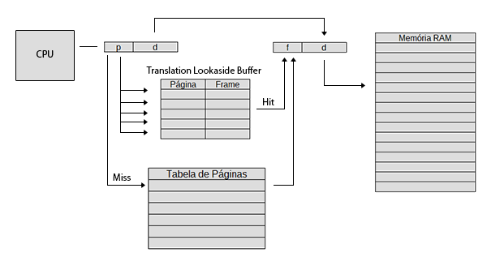
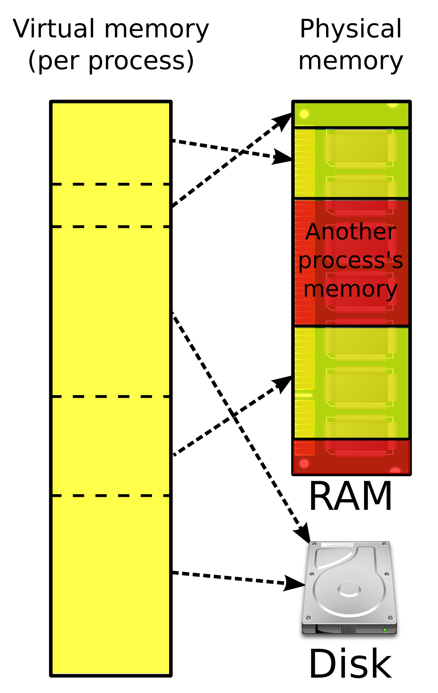
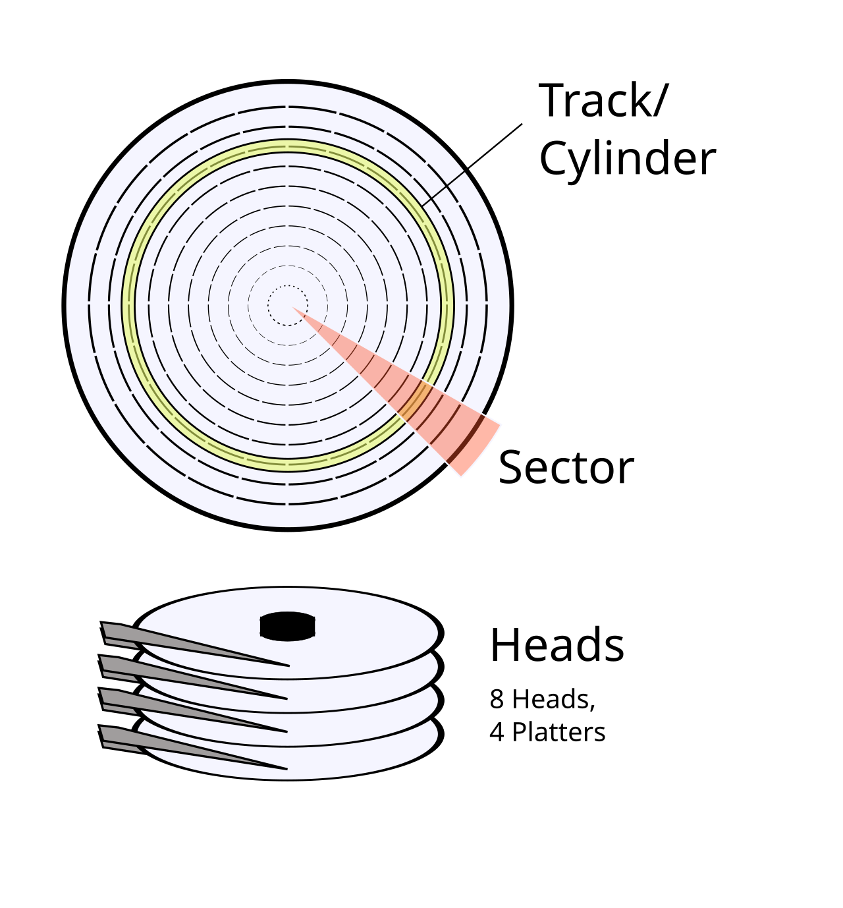

Operating Systems (PCC-203-COM)
Complete Exam-Oriented Study Guide • Simple Explanations, Formal Definitions, Worked Numericals, C/Shell Code & Solved SPPU Questions
Scheme: Theory 3 Hrs/Week • 3 Credits • CCE: 40 Marks • End-Semester: 60/70 Marks (2.5 Hours). Every unit carries equal weightage (14 Marks in 70M Endsem: Q1/Q2 Unit I, Q3/Q4 Unit II, Q5/Q6 Unit III, Q7/Q8 Unit IV, Q9/Q10 Unit V).
- CO1: Analyze OS fundamentals, types, structures, system calls, and Linux commands.
- CO2: Apply process scheduling and synchronization to optimize CPU utilization.
- CO3: Identify mechanisms for dealing with deadlocks and concurrency concerns.
- CO4: Apply memory management techniques to solve memory allocation & paging problems.
- CO5: Illustrate I/O, disk scheduling, and file management policies.
Unit I: Introduction to Operating Systems (09 Hours)
1.1 Objectives, Functions & Evolution of Operating Systems
Exam Definition: An Operating System is a system software that acts as an intermediary between the computer user and the computer hardware, managing system resources and providing an environment for programs to execute efficiently and conveniently.
In Simple Words: Think of the OS as a restaurant manager. Customers (users/apps) don't walk into the kitchen (CPU, RAM, disk) to cook; they place an order with the manager, who coordinates the chefs and tables fairly without chaos.
Core Objectives & Dual Role
- Convenience: Hides messy hardware details (disk sectors, interrupts) behind clean interfaces (files, windows, buttons).
- Efficiency: Maximizes CPU, memory, and I/O utilization so expensive hardware doesn't sit idle.
- Ability to Evolve: Modular design allows new hardware drivers and OS updates without breaking existing apps.
- OS as Resource Manager: Allocates CPU time, RAM, disk space, and I/O devices fairly and resolves conflicts among competing programs.
- OS as Control Program: Supervises program execution to prevent errors, unauthorized access, and improper use of the computer.
Main Functions of an Operating System
- Process Management: Creating, scheduling, suspending, and terminating processes; synchronization and IPC.
- Memory Management: Tracking free/used RAM, allocating/deallocating memory, and handling virtual memory/swapping.
- File & Storage Management: Creating/deleting files & directories, mapping files onto secondary storage, disk scheduling.
- I/O & Device Management: Buffering, caching, spooling, and providing device-driver interfaces.
- Security & Protection: Authenticating users and enforcing access permissions so one process cannot corrupt another.
Evolution & Types of Operating Systems
| OS Type | How It Works | Pros & Cons | Examples |
|---|---|---|---|
| Batch OS | Similar jobs are grouped into batches and executed sequentially without user interaction. | Good for long jobs; CPU sits idle during slow I/O. | IBM OS/360 |
| Multiprogramming OS | Keeps multiple jobs in RAM; when one waits for I/O, CPU switches to another. | High CPU utilization; no direct user interactivity. | Early UNIX, OS/MFT |
| Time-Sharing (Multitasking) | CPU switches rapidly among jobs using small time slices (quanta) so users get fast responses. | Interactive & responsive; slight context-switch overhead. | Linux, Windows, macOS |
| Real-Time OS (RTOS) | Guarantees strict timing deadlines. Hard RTOS: missing a deadline is fatal. Soft RTOS: occasional miss is tolerable. | Deterministic response; limited general-purpose multitasking. | VxWorks, FreeRTOS, QNX |
| Network OS | Runs on a server and manages data, users, and security over a network; users know machines are separate. | Centralized administration; single point of failure if server goes down. | Windows Server, Novell NetWare |
| Distributed OS | Connects independent networked computers so they appear to users as a single unified system. | High reliability & resource sharing; complex design & security. | Amoeba, Locus, Plan 9 |
1.2 OS Services, Dual-Mode Operation & System Calls
An OS provides services for users (User Interface, Program Execution, I/O Operations, File-System Manipulation, Communications, Error Detection) and for system efficiency (Resource Allocation, Accounting, Protection & Security).
Exam Definition: Dual-mode operation is a hardware-supported protection mechanism using a mode bit (1 = User Mode, 0 = Kernel/Supervisor Mode) to separate user-program execution from OS kernel execution, restricting privileged instructions to Kernel Mode.
In Simple Words: Like a bank vault: customers (User Mode) can fill deposit slips in the lobby, but only bank staff (Kernel Mode) can open the vault (privileged hardware instructions).
Exam Definition: A System Call is a programmatic interface through which a user-space process requests a privileged service from the Operating System kernel (triggering a software interrupt/trap to switch from User Mode to Kernel Mode).
In Simple Words: It is the official "service counter" window where your C/Python program politely asks the kernel to open a file, create a process, or send network data.
Types of System Calls (with Linux/POSIX Examples)
| Category | Purpose | Examples (Linux / Windows) |
|---|---|---|
| Process Control | Create, terminate, load, execute, wait, allocate memory | fork(), execve(), exit(), wait() / CreateProcess() |
| File Management | Create, delete, open, close, read, write, reposition | open(), read(), write(), close() / CreateFile() |
| Device Management | Request/release device, read/write device, set attributes | ioctl(), read(), write() / SetConsoleMode() |
| Information Maintenance | Get/set time, date, system data, process attributes | getpid(), alarm(), time() / GetCurrentProcessId() |
| Communications | Create/delete connections, send/receive messages, shared memory | pipe(), shmget(), socket() / CreatePipe() |
| Protection | Control access to resources, get/set permissions | chmod(), umask(), chown() / SetFileSecurity() |
Parameter Passing to System Calls: (1) Pass directly in CPU registers (fastest, limited count), (2) Store in a memory block/table and pass the block's address in a register (used by Linux/Solaris), or (3) Push onto the program stack and pop by the OS.
// C Example: Process Control & File Management System Calls in Linux
#include <stdio.h>
#include <unistd.h>
#include <fcntl.h>
#include <sys/wait.h>
int main() {
pid_t pid = fork(); // Process Control System Call
if (pid == 0) {
int fd = open("note.txt", O_CREAT | O_WRONLY, 0644); // File System Call
write(fd, "SPPU OS Unit 1\n", 15);
close(fd);
_exit(0);
} else {
wait(NULL); // Parent waits for child
printf("Child %d finished writing file.\n", pid);
}
return 0;
}1.3 OS Structures: Monolithic, Layered & Microkernel
| Architecture | Design Principle | Advantages | Disadvantages | Examples |
|---|---|---|---|---|
| Monolithic | All OS services (scheduling, memory, VFS, drivers) run together in a single kernel address space. | Very fast (direct function calls, minimal overhead). | Hard to maintain; a bug in one driver can crash the entire OS. | Linux, MS-DOS, early UNIX |
| Layered | OS divided into strict layers (Layer 0 = Hardware to Layer N = UI); layer $k$ only calls layer $k-1$. | Easy debugging and modular verification. | Careful layer ordering required; slower due to traversing multiple layers. | THE OS, Venus |
| Microkernel | Minimal kernel (only IPC, basic scheduling, low-level memory). Drivers & file systems run as user-space servers. | High reliability, security, and easy extensibility. | Slower performance due to frequent user-kernel IPC message passing. | Mach, QNX, Minix 3 |
1.4 Introduction to Linux OS & Basic Shell Commands
A Linux Operating System consists of four major components: (1) Hardware (CPU, RAM, Disk), (2) Linux Kernel (monolithic modular kernel handling processes, memory, VFS, drivers), (3) System Libraries (e.g., glibc wrapping system calls), and (4) Shell & System Utilities (bash/zsh command interpreter + user tools).
| Command | Purpose | Example |
|---|---|---|
ls -la | List all files including hidden ones with permissions | ls -la /home/student |
cd / pwd | Change directory / Print working directory | cd ~/os && pwd |
mkdir / rm | Create directory / Remove files or directories | mkdir lab1 && rm -rf tmp |
cp / mv | Copy files / Move or rename files | cp a.c b.c |
chmod | Change file permissions (r=4, w=2, x=1) | chmod 755 script.sh |
grep / wc | Search pattern in files / Count lines, words, chars | grep "error" log.txt | wc -l |
ps / kill | View running processes / Send signal (terminate PID) | ps -ef, kill -9 1234 |
Case Study 1: Automating User & File Management in Linux (Shell Script)
#!/bin/bash
# Case Study: Automated Backup & Permission Audit Script
BACKUP_DIR="/tmp/sppu_backup_$(date +%F)"
mkdir -p "$BACKUP_DIR"
for file in *.txt; do
[ -e "$file" ] || continue
cp "$file" "$BACKUP_DIR/"
chmod 644 "$BACKUP_DIR/$file"
echo "Backed up $file to $BACKUP_DIR"
done
echo "Total backed-up files: $(ls -1 "$BACKUP_DIR" | wc -l)"1.5 Important SPPU Exam Questions & Model Answers (Unit I)
Model Answer Points: (1) Define layered architecture (modular hierarchy from Layer 0 Hardware to Layer N UI, each layer uses services only from the layer below it). (2) Draw the stacked layer diagram (Figure 1.2). (3) Advantages (2M): Modularity, easy debugging (isolate bug to a specific layer), information hiding. (4) Disadvantages (1M): Difficulty in defining strict layer boundaries (e.g., backing store vs CPU scheduler), performance overhead of passing parameters across multiple layers.
Model Answer Points: (1) Definition & Need: User programs cannot access hardware directly due to Dual-Mode protection; system calls provide a safe trap-based gateway to Kernel Mode. (2) List and explain 5 types with 2 examples each: Process Control (fork, exit), File Management (open, read), Device Management (ioctl), Information Maintenance (getpid), Communications (pipe, shmget).
Unit II: Process and Thread Management (09 Hours)
2.1 Process Concepts, States & Process Control Block (PCB)
Exam Definition: A Process is a program in execution. Unlike a passive program (executable file on disk), a process is an active entity containing the program counter, CPU registers, stack, heap, and data section.
In Simple Words: A recipe book on the shelf is a program; actually cooking that recipe in the kitchen (with ingredients, timer, and stove) is a process.
Types of Processes: (1) CPU-bound (spends most time computing, few I/O requests) vs I/O-bound (spends most time waiting for I/O, short CPU bursts), and (2) Independent vs Cooperating processes (which share data/communicate).
Process States and Transitions
- New: Process is being created.
- Ready: Loaded in main memory, waiting for CPU assignment.
- Running: Instructions are currently being executed by a CPU core.
- Waiting (Blocked): Waiting for an event (e.g., disk I/O completion, semaphore).
- Terminated: Finished execution; OS reclaims its resources.

Exam Definition: A Process Control Block (PCB), also called a Task Control Block, is a kernel data structure that stores all information needed to manage and resume a specific process.
In Simple Words: It is the process's "passport and bookmark" — if the OS pauses a process, the PCB remembers exactly where it stopped so it can resume seamlessly later.
- Process ID (PID) & State: Unique identifier and current state (Ready, Running, etc.).
- Program Counter (PC): Address of the next instruction to execute.
- CPU Registers: Accumulators, index registers, stack pointers saved on interrupt.
- CPU Scheduling Info: Priority, scheduling queue pointers.
- Memory Management Info: Base/limit registers, page tables, segment tables.
- Accounting & I/O Status Info: CPU time used, open file descriptors, allocated I/O devices.

2.2 Context Switching & Types of Schedulers
Context Switching: Saving the CPU state (registers, PC) of the currently running process into its PCB and loading the saved state of the next process from its PCB. Impact on Performance: Context switching is pure overhead (no useful user work happens during the switch), typically taking microseconds; excessive switching reduces throughput and causes TLB/cache misses.
| Scheduler Type | Alias | Primary Function | Frequency |
|---|---|---|---|
| Long-Term Scheduler | Job Scheduler | Selects processes from disk job pool and loads them into RAM (New → Ready). Controls the degree of multiprogramming. | Infrequent (seconds/minutes) |
| Short-Term Scheduler | CPU Scheduler | Selects one Ready process from RAM and allocates the CPU to it (Ready → Running) via the Dispatcher. | Very frequent (milliseconds) |
| Medium-Term Scheduler | Swapper | Temporarily removes (swaps out) processes from RAM to disk to reduce memory pressure, and swaps them back in later. | Intermediate |
2.3 Threads & Multithreading (User-Level vs Kernel-Level)
Exam Definition: A Thread (lightweight process) is the basic unit of CPU utilization within a process, consisting of a Thread ID, Program Counter, register set, and stack, while sharing code, data, and open files with peer threads of the same process.
In Simple Words: A process is a house; threads are family members living inside it — each has their own bedroom (stack & registers), but they share the kitchen and living room (code & heap).
Multithreading Models: Many-to-One (many user threads mapped to 1 kernel thread; one blocking call blocks all), One-to-One (each user thread maps to 1 kernel thread; true parallelism, used in Linux/Windows), and Many-to-Many (multiplexes M user threads onto N kernel threads).
| Feature | User-Level Threads (ULT) | Kernel-Level Threads (KLT) |
|---|---|---|
| Managed By | User-space thread library (OS is unaware) | OS Kernel directly |
| Creation & Switching | Very fast (no kernel mode switch) | Slower (requires system call / mode switch) |
| Blocking System Call | Blocks the entire process | Only the calling thread blocks; others run |
| Multicore Parallelism | No (kernel sees only 1 process) | Yes (kernel schedules threads across cores) |
// C Example: Creating a Kernel-Level POSIX Thread (compile with -lpthread)
#include <stdio.h>
#include <pthread.h>
void* worker(void* arg) {
printf("Hello from Thread %d\n", *(int*)arg);
return NULL;
}
int main() {
pthread_t t1;
int id = 1;
pthread_create(&t1, NULL, worker, &id);
pthread_join(t1, NULL);
return 0;
}2.4 CPU Scheduling Algorithms & Solved Gantt Numericals
Preemptive vs Non-Preemptive: In Non-Preemptive scheduling (FCFS, non-preemptive SJF), once a process gets the CPU, it keeps it until it terminates or waits for I/O. In Preemptive scheduling (SRTF, Round Robin, Preemptive Priority), the OS can interrupt a running process when a higher-priority process arrives or a time quantum expires.
- Completion Time ($CT$): Time at which process finishes execution.
- Turnaround Time ($TAT$): $TAT = CT - AT$ (Total time spent in system).
- Waiting Time ($WT$): $WT = TAT - BT$ (Total time spent waiting in Ready Queue).
- Response Time ($RT$): $RT = \text{First CPU Allocation Time} - AT$.
Solved Numerical 1 (SPPU QB): FCFS vs Non-Preemptive SJF
Processes: $P_1(AT=0, BT=5)$, $P_2(AT=1, BT=3)$, $P_3(AT=2, BT=8)$, $P_4(AT=3, BT=6)$.
1. FCFS (First-Come, First-Served): Order is $P_1 \to P_2 \to P_3 \to P_4$.
FCFS: $TAT = \{5, 7, 14, 19\} \Rightarrow \text{Avg TAT} = 11.25$. $WT = \{0, 4, 6, 13\} \Rightarrow \text{Avg WT} = \mathbf{5.75\text{ ms}}$. Note: FCFS suffers from the Convoy Effect (short processes stuck behind one long CPU-bound process).
2. Non-Preemptive SJF (Shortest Job First): At $t=0$, only $P_1$ is available, so $P_1$ runs $0 \to 5$. At $t=5$, $P_2(3), P_3(8), P_4(6)$ are ready; shortest is $P_2(3)$, then $P_4(6)$, then $P_3(8)$.
| Process | AT | BT | CT | TAT = CT - AT | WT = TAT - BT |
|---|---|---|---|---|---|
| P1 | 0 | 5 | 5 | 5 | 0 |
| P2 | 1 | 3 | 8 | 7 | 4 |
| P3 | 2 | 8 | 22 | 20 | 12 |
| P4 | 3 | 6 | 14 | 11 | 5 |
SJF: $\text{Avg TAT} = (5+7+20+11)/4 = \mathbf{10.75\text{ ms}}$, $\text{Avg WT} = (0+4+12+5)/4 = \mathbf{5.25\text{ ms}}$.
Solved Numerical 2 (SPPU Oct 2025 [6582]-238 Q4b): SJF & Round Robin ($TQ = 0.5$)
Given: $P_1(BT=2, AT=10)$, $P_2(BT=1, AT=10)$, $P_3(BT=1, AT=11)$, $P_4(BT=1, AT=12)$.
SJF (Non-Preemptive): At $t=10$, $P_1(2)$ and $P_2(1)$ arrive. Shortest is $P_2(1)$ → runs $10 \to 11$. At $t=11$, $P_1(2)$ and $P_3(1)$ are ready; shortest is $P_3(1)$ → runs $11 \to 12$. At $t=12$, $P_1(2)$ and $P_4(1)$ are ready; shortest is $P_4(1)$ → runs $12 \to 13$, then $P_1(2)$ runs $13 \to 15$.
- $CT = \{15, 11, 12, 13\}$, $TAT = \{5, 1, 1, 1\} \Rightarrow \text{Avg TAT} = \mathbf{2.0}$.
- $WT = \{3, 0, 0, 0\} \Rightarrow \text{Avg WT} = \mathbf{0.75}$.
Round Robin ($TQ = 0.5$): Ready queue starts at $t=10$ with $[P_1, P_2]$. Tracing in $0.5$ steps: $P_1(10\text{--}10.5)$, $P_2(10.5\text{--}11.0)$, $P_1(11.0\text{--}11.5)$ [$P_3$ arrives at 11], $P_2(11.5\text{--}12.0, \text{done})$ [$P_4$ arrives at 12], $P_3(12.0\text{--}12.5)$, $P_1(12.5\text{--}13.0)$, $P_4(13.0\text{--}13.5)$, $P_3(13.5\text{--}14.0, \text{done})$, $P_1(14.0\text{--}14.5, \text{done})$, $P_4(14.5\text{--}15.0, \text{done})$.
- $CT = \{14.5, 12.0, 14.0, 15.0\}$, $TAT = \{4.5, 2.0, 3.0, 3.0\} \Rightarrow \text{Avg TAT} = \mathbf{3.125}$.
- $WT = \{2.5, 1.0, 2.0, 2.0\} \Rightarrow \text{Avg WT} = \mathbf{1.875}$.

SRTF (Shortest Remaining Time First) & Priority Scheduling: SRTF is the preemptive version of SJF (always picks the process with smallest remaining burst time, yielding optimal minimum average waiting time). Priority scheduling assigns CPU to highest priority; it can cause Starvation (indefinite blocking of low-priority processes), which is solved by Aging (gradually increasing priority of waiting processes over time).
Scheduling in UNIX & Windows: Modern Linux uses the CFS (Completely Fair Scheduler) / EEVDF with virtual runtime (vruntime) in a red-black tree. Windows uses a 32-level priority-based preemptive multilevel feedback queue (levels 16–31 real-time, 0–15 variable).
// Complete C Program: FCFS CPU Scheduling Calculator
#include <stdio.h>
int main() {
int n = 4;
int at[] = {0, 1, 2, 3}, bt[] = {5, 3, 8, 6};
int ct[4], tat[4], wt[4], time = 0;
float avg_tat = 0, avg_wt = 0;
for (int i = 0; i < n; i++) {
if (time < at[i]) time = at[i];
time += bt[i];
ct[i] = time;
tat[i] = ct[i] - at[i];
wt[i] = tat[i] - bt[i];
avg_tat += tat[i];
avg_wt += wt[i];
}
printf("Avg TAT = %.2f, Avg WT = %.2f\n", avg_tat / n, avg_wt / n);
return 0;
}Case Studies (Unit II)
- Real-Time Scheduling Challenges: Meeting hard deadlines (Rate Monotonic Scheduling, Earliest Deadline First), handling Priority Inversion (solved by Priority Inheritance Protocol), and minimizing interrupt latency.
- Workload Comparison: FCFS works well for uniform batch jobs; SJF/SRTF minimizes average WT for interactive short jobs; RR ensures fairness for time-sharing; Priority suits critical real-time tasks.
2.5 Important SPPU Exam Questions & Model Answers (Unit II)
Model Answer Points: (1) Define Process (1M). (2) Draw neat 5-state diagram (New, Ready, Running, Waiting, Terminated) + optional Suspended states (2M). (3) Explain each state and the exact transition triggers: Admit, Dispatch, Time-Quantum Expired, I/O Request, I/O Complete, Exit (4M).
Model Answer Points: (1) Diagram showing Job Queue, Ready Queue, and Swapped-out Queue (2M). (2) Detailed explanation of Long-term (degree of multiprogramming, mix of I/O & CPU bound), Short-term (CPU selection, millisecond speed, Dispatcher), and Medium-term (swapping to manage memory) (5M).
Unit III: Interprocess Communication & Deadlock (09 Hours)
3.1 Concurrency, Critical Section Problem & Peterson's Solution
Exam Definition: A Critical Section is a code segment in which a cooperating process accesses shared resources (variables, tables, files) that must not be concurrently accessed by more than one process. A Race Condition occurs when the final outcome depends on the unpredictable execution order of concurrent processes.
In Simple Words: Two people editing the same Google Doc line or withdrawing from the same bank account simultaneously without taking turns — whoever saves last overwrites the other!
Three Requirements for a Valid Critical Section Solution
- Mutual Exclusion: If process $P_i$ is executing in its critical section, no other process can execute in its critical section.
- Progress: If no process is in its critical section and some processes wish to enter, only processes not in their remainder section can participate in deciding who enters next, and this selection cannot be postponed indefinitely.
- Bounded Waiting: There exists a bound (limit) on the number of times other processes are allowed to enter their critical sections after a process has made a request to enter its critical section and before that request is granted (prevents starvation).
Peterson's Solution (Two-Process Software Synchronization)
Uses two shared variables: int turn; (whose turn it is) and bool flag[2]; (flag[i] = true means $P_i$ is ready to enter). It satisfies all three requirements (Mutual Exclusion, Progress, Bounded Waiting).
// Peterson's Solution for Process i (where j = 1 - i)
bool flag[2] = {false, false};
int turn = 0;
void process(int i) {
int j = 1 - i;
while (true) {
flag[i] = true; // Express desire to enter CS
turn = j; // Politely give priority to the other process
while (flag[j] && turn == j) {
; // Busy wait
}
/* --- CRITICAL SECTION --- */
flag[i] = false; // Exit section
/* --- REMAINDER SECTION --- */
}
}3.2 Synchronization Primitives: Semaphores, Mutexes & Monitors
Exam Definition: A Semaphore $S$ is an integer synchronization variable accessed only through two indivisible (atomic) operations: wait(S) (or P(S), which decrements $S$) and signal(S) (or V(S), which increments $S$).
In Simple Words: A semaphore is like a token bucket at a parking lot. wait() takes a token (if 0 tokens left, the car waits); signal() puts a token back when leaving.
// Atomic Semaphore Operations (Blocking Implementation)
void wait(semaphore *S) {
S->value--;
if (S->value < 0) {
add this process to S->list;
block(); // Sleep instead of busy-waiting
}
}
void signal(semaphore *S) {
S->value++;
if (S->value <= 0) {
remove a process P from S->list;
wakeup(P);
}
}| Feature | Mutex (Mutual Exclusion Lock) | Semaphore (Binary / Counting) | Monitor |
|---|---|---|---|
| Type | Locking mechanism (owns the lock) | Signaling mechanism (integer counter) | High-level language construct (ADT) |
| Ownership | Only the thread that locked it can unlock it | Any process can call signal() | Implicit mutual exclusion; compiler-enforced |
| Use Case | Protecting a single critical resource | Counting resources (N instances) & ordering | Complex synchronization with condition variables |
3.3 Classic Synchronization Problems & IPC
1. Producer-Consumer (Bounded Buffer) Problem
Uses three semaphores: mutex = 1 (buffer lock), empty = N (free slots), full = 0 (filled slots).
// Producer
do {
// produce item
wait(empty);
wait(mutex);
/* add item to buffer */
signal(mutex);
signal(full);
} while (true);
// Consumer
do {
wait(full);
wait(mutex);
/* remove item from buffer */
signal(mutex);
signal(empty);
// consume item
} while (true);2. Readers-Writers Problem (Readers Priority — SPPU Oct 2025)
Multiple readers can read simultaneously, but a writer needs exclusive access. Uses rw_mutex = 1, mutex = 1, and int read_count = 0.
// Writer
wait(rw_mutex);
/* writing is performed */
signal(rw_mutex);
// Reader (Readers Priority)
wait(mutex);
read_count++;
if (read_count == 1) wait(rw_mutex); // First reader locks out writers
signal(mutex);
/* reading is performed */
wait(mutex);
read_count--;
if (read_count == 0) signal(rw_mutex); // Last reader releases writer lock
signal(mutex);3. Dining Philosophers Problem
5 philosophers share 5 chopsticks. If all pick up their left chopstick simultaneously, deadlock occurs. Deadlock-free solutions: (a) Allow at most 4 philosophers at the table, (b) Pick up both chopsticks only if both are free (critical section), or (c) Asymmetric rule: odd philosopher picks left first, even picks right first.
Inter-Process Communication (IPC): Shared Memory vs Message Passing
| Aspect | Shared Memory | Message Passing |
|---|---|---|
| Mechanism | Processes share a common memory region; kernel only sets it up. | Kernel provides send(msg) and receive(msg) system calls. |
| Speed | Very fast (memory-speed access, no kernel per-transfer). | Slower (system call & data copy on every message). |
| Synchronization | Programmer must synchronize manually (semaphores/mutex). | Built-in synchronization (blocking send/receive). |
3.4 Deadlocks & Coffman's 4 Necessary Conditions
Exam Definition: A Deadlock is a permanent blocking state in which a set of processes is blocked because each process holds a resource and waits for another resource currently held by another process in the same set.
In Simple Words: Four cars meet at a 4-way intersection; each car occupies one corner and refuses to back up until the car in front moves — nobody moves forever!
Coffman's Four Necessary Conditions (All 4 must hold simultaneously for deadlock):
- Mutual Exclusion: At least one resource must be held in a non-sharable mode.
- Hold and Wait: A process is currently holding at least one resource and waiting to acquire additional resources held by other processes.
- No Preemption: Resources cannot be forcibly taken away; a process releases them only voluntarily after finishing.
- Circular Wait: A closed chain of processes $\{P_0, P_1, \dots, P_n\}$ exists such that $P_0$ waits for $P_1$, $P_1$ waits for $P_2$, ..., and $P_n$ waits for $P_0$.
Deadlock Handling Methods: (1) Prevention: ensure at least one Coffman condition never holds (e.g., impose strict resource ordering to break Circular Wait, or request all resources upfront to break Hold & Wait). (2) Avoidance: dynamically check resource-allocation state (Banker's Algorithm). (3) Detection & Recovery: run detection (Wait-For Graph for single instance) and recover via process termination or resource preemption.
3.5 Deadlock Avoidance: Banker's Algorithm (Solved Numerical)
Core Idea: Before granting a resource request, the OS checks if the resulting state is a Safe State (there exists at least one Safe Sequence $\langle P_{i_1}, P_{i_2}, \dots, P_{i_n} \rangle$ where every process can finish using currently available + released resources). Note: Unsafe state $\neq$ immediate deadlock, but deadlock may occur.
$$\text{Need}[i][j] = \text{Max}[i][j] - \text{Allocation}[i][j]$$
$$\text{Available}[j] = \text{Total}[j] - \sum_{i=0}^{n-1} \text{Allocation}[i][j]$$
Solved Numerical (SPPU 2024 Question Bank Q6)
System has 3 resource types: $A=10, B=5, C=7$. Current Allocation and Max for $P_1 \dots P_5$:
| Process | Allocation (A B C) | Max (A B C) | Need = Max − Alloc |
|---|---|---|---|
| P1 | 0 1 0 | 7 5 3 | 7 4 3 |
| P2 | 2 0 0 | 3 2 2 | 1 2 2 |
| P3 | 3 0 2 | 9 0 2 | 6 0 0 |
| P4 | 2 1 1 | 4 2 2 | 2 1 1 |
| P5 | 0 2 1 | 5 3 3 | 5 1 2 |
Step 1 — Compute Available: Total Allocated = $(0+2+3+2+0, \; 1+0+0+1+2, \; 0+0+2+1+1) = (7, 4, 4)$. Therefore, $\text{Available} = (10, 5, 7) - (7, 4, 4) = \mathbf{(3, 1, 3)}$.
Step 2 — Safety Algorithm Trace ($\text{Work} = (3, 1, 3)$):
- $P_1$: Need $(7,4,3) \le (3,1,3)$? False.
- $P_2$: Need $(1,2,2) \le (3,1,3)$? False ($B: 2 > 1$).
- $P_3$: Need $(6,0,0) \le (3,1,3)$? False.
- $P_4$: Need $(2,1,1) \le (3,1,3)$? True! Finish $P_4 \Rightarrow \text{Work} = (3,1,3) + (2,1,1) = \mathbf{(5, 2, 4)}$.
- $P_5$: Need $(5,1,2) \le (5,2,4)$? True! Finish $P_5 \Rightarrow \text{Work} = (5,2,4) + (0,2,1) = \mathbf{(5, 4, 5)}$.
- $P_2$: Need $(1,2,2) \le (5,4,5)$? True! Finish $P_2 \Rightarrow \text{Work} = (5,4,5) + (2,0,0) = \mathbf{(7, 4, 5)}$.
- $P_1$: Need $(7,4,3) \le (7,4,5)$? True! Finish $P_1 \Rightarrow \text{Work} = (7,4,5) + (0,1,0) = \mathbf{(7, 5, 5)}$.
- $P_3$: Need $(6,0,0) \le (7,5,5)$? True! Finish $P_3 \Rightarrow \text{Work} = (7,5,5) + (3,0,2) = (10, 5, 7)$.
Conclusion: System is in a SAFE STATE with Safe Sequence: $\mathbf{\langle P_4, P_5, P_2, P_1, P_3 \rangle}$.
Step 3 — Request Check: If $P_1$ requests $(0, 0, 2)$: (1) $(0,0,2) \le \text{Need}[P_1]=(7,4,3)$ (True), (2) $(0,0,2) \le \text{Available}=(3,1,3)$ (True). Pretend to allocate: $\text{Available} = (3,1,1)$, $\text{Alloc}[P_1] = (0,1,2)$, $\text{Need}[P_1] = (7,4,1)$. Running Safety Algorithm again: $P_4(2,1,1) \le (3,1,1) \to \text{Work}=(5,2,2) \to P_5(5,1,2) \to \text{Work}=(5,4,3) \to P_2 \to P_1 \to P_3$. Safe sequence exists, so request CAN be granted immediately!
// Banker's Safety Algorithm Pseudocode
bool isSafe(int alloc[][R], int need[][R], int avail[]) {
int work[R]; bool finish[P] = {false};
for (int j = 0; j < R; j++) work[j] = avail[j];
int count = 0;
while (count < P) {
bool found = false;
for (int i = 0; i < P; i++) {
if (!finish[i] && need_le_work(need[i], work)) {
for (int j = 0; j < R; j++) work[j] += alloc[i][j];
finish[i] = true;
safeSeq[count++] = i;
found = true;
}
}
if (!found) return false; // Unsafe state
}
return true; // Safe state
}Case Studies (Unit III)
- IPC in a Banking System: ATM/teller processes use shared-memory account ledgers protected by mutexes/semaphores or transactional message queues to prevent race conditions during concurrent deposits/withdrawals.
- Deadlock in Railway Scheduling: Two trains on opposite tracks each hold one track segment and wait for the other's segment (Circular Wait). Prevented by central signaling (Wait-For Graph detection) or numbered track-lock ordering.
3.6 Important SPPU Exam Questions & Model Answers (Unit III)
Model Answer Points: Define deadlock (1M) + explain all 4 Coffman conditions: Mutual Exclusion, Hold and Wait, No Preemption, Circular Wait (3M). Note that all 4 must hold simultaneously.
Model Answer Points: Define Semaphore and atomic wait()/signal() (2M). Show how initializing binary semaphore mutex = 1 and wrapping the critical section with wait(mutex) before entry and signal(mutex) after exit guarantees Mutual Exclusion, Progress, and Bounded Waiting (2M).
Unit IV: Memory Management (09 Hours)
4.1 Contiguous Allocation, Partitioning, Fragmentation & Fit Strategies
Logical vs Physical Address: A Logical (Virtual) Address is generated by the CPU; a Physical Address is the actual location in RAM. The MMU (Memory Management Unit) maps logical addresses to physical addresses at runtime.
Contiguous vs Non-Contiguous Allocation: Contiguous allocation stores a process in one single continuous block of RAM (Fixed/Dynamic Partitioning). Non-contiguous allocation splits a process into parts scattered across RAM (Paging, Segmentation).
Exam Definition: Internal Fragmentation is unused memory wasted inside an allocated fixed-size partition/page when a process needs less than the partition size. External Fragmentation is wasted free memory scattered in small non-contiguous holes between allocated blocks, too small to satisfy a new process request even though total free memory is enough.
In Simple Words: Internal = buying a 10-inch pizza box for a 6-inch pizza (wasted space inside the box). External = 5 empty single seats scattered across a cinema hall when a family of 4 wants to sit together.
| Memory Partitioning | How It Works | Fragmentation |
|---|---|---|
| Fixed (Static) Partitioning | RAM divided into fixed-size partitions at boot time. | Suffers from Internal Fragmentation. |
| Dynamic (Variable) Partitioning | Partitions created dynamically to match exact process size. | No internal fragmentation, but suffers from External Fragmentation (solved by Compaction or Paging). |
Memory Placement Strategies (Worked Example)
Suppose free memory holes are: 100 KB, 500 KB, 200 KB, 300 KB, 600 KB. Processes arrive: P1=212 KB, P2=417 KB, P3=112 KB, P4=426 KB.
- First Fit (allocates first hole big enough): P1→500 (288 left), P2→600 (183 left), P3→288 (176 left), P4→Must Wait. (Fastest).
- Best Fit (allocates smallest hole big enough): P1→300 (88 left), P2→500 (83 left), P3→200 (88 left), P4→600 (174 left). All 4 fit! (Leaves tiny unusable holes).
- Worst Fit (allocates largest hole): P1→600 (388 left), P2→500 (83 left), P3→388 (276 left), P4→Must Wait.
4.2 Paging, Page Table, TLB & EMAT Formula
Exam Definition: Paging is a non-contiguous memory management scheme that divides physical memory into fixed-size blocks called Frames and logical memory into same-size blocks called Pages, mapped via a Page Table. A TLB (Translation Lookaside Buffer) is a fast associative hardware cache that stores recent page-to-frame translations.
In Simple Words: Instead of storing a book on one giant shelf, Paging tears it into equal pages and puts them in any free slots, keeping an index (Page Table). The TLB is your sticky-note cheat sheet of the most-used pages.
Structure of Page Table: (1) Hierarchical (Multi-level) Paging (breaks page table into pages to avoid huge contiguous table), (2) Hashed Page Table (for 64-bit address spaces), and (3) Inverted Page Table (one entry per physical frame, saves RAM).

Let $\alpha$ = TLB hit ratio, $t_{\text{TLB}}$ = TLB lookup time, $t_{\text{mem}}$ = Main memory access time:
$$\text{EMAT} = \alpha (t_{\text{TLB}} + t_{\text{mem}}) + (1 - \alpha)(t_{\text{TLB}} + 2 \cdot t_{\text{mem}})$$
Worked Numerical: If $\alpha = 0.80$ (80% hit), $t_{\text{TLB}} = 20\text{ ns}$, $t_{\text{mem}} = 100\text{ ns}$:
$\text{EMAT} = 0.80(20 + 100) + 0.20(20 + 200) = 0.80(120) + 0.20(220) = 96 + 44 = \mathbf{140\text{ ns}}$.
4.3 Segmentation vs Paging
Segmentation divides a program into variable-sized logical units (Code, Stack, Data, Heap) matching the programmer's view. A logical address is $\langle \text{segment-number}, \text{offset} \rangle$. The Segment Table stores Base (starting physical address) and Limit (length). If $\text{offset} < \text{Limit}$, $\text{Physical Address} = \text{Base} + \text{offset}$; else Trap (addressing error).
| Parameter | Paging | Segmentation |
|---|---|---|
| Block Size | Fixed-size Pages & Frames (hardware-driven) | Variable-size Segments (programmer/logical view) |
| Fragmentation | Internal fragmentation (last page) | External fragmentation |
| Address Format | Single address split into $(p, d)$ | Two-dimensional $(s, d)$ |
| Table Entries | Frame number + protection bits | Base address + Limit (length) |
4.4 Virtual Memory, Demand Paging & Page Replacement
Virtual Memory separates logical memory from physical memory, allowing programs larger than physical RAM to execute. Demand Paging loads a page into RAM only when it is needed (referenced). If a referenced page has its valid-invalid bit set to i (not in RAM), a Page Fault trap occurs: OS finds a free frame (or evicts a victim page), loads the page from disk, updates the Page Table, and restarts the instruction.

Solved Numerical 1 (SPPU Oct 2025 Q7a): FIFO Page Replacement
Reference string: 2, 3, 2, 1, 5, 4, 5, 3, 2, 2, 2, 5, 2, Frames = 3.
| Ref | 2 | 3 | 2 | 1 | 5 | 4 | 5 | 3 | 2 | 2 | 2 | 5 | 2 |
|---|---|---|---|---|---|---|---|---|---|---|---|---|---|
| F1 | 2 | 2 | 2 | 2 | 5 | 5 | 5 | 5 | 2 | 2 | 2 | 2 | 2 |
| F2 | - | 3 | 3 | 3 | 3 | 4 | 4 | 4 | 4 | 4 | 4 | 5 | 5 |
| F3 | - | - | - | 1 | 1 | 1 | 1 | 3 | 3 | 3 | 3 | 3 | 3 |
| Hit/Fault | F | F | H | F | F | F | H | F | F | H | H | F | H |
Total Page Faults (FIFO) = 8 (Hits = 5).
Solved Numerical 2 (SPPU QB Q6): FIFO vs LRU vs Optimal
Reference string: 1, 2, 3, 4, 1, 2, 5, 1, 2, 3, 4, 5, Frames = 3.
- FIFO (First-In, First-Out): Evicts oldest loaded page. Page Faults = 9. Note: FIFO can suffer from Belady's Anomaly (more frames can paradoxically cause more page faults!).
- LRU (Least Recently Used): Evicts page not used for the longest time in the past. Trace: 1(F), 2(F), 3(F), 4[evict 1](F), 1[evict 2](F), 2[evict 3](F), 5[evict 4](F), 1(H), 2(H), 3[evict 5](F), 4[evict 1](F), 5[evict 2](F). Page Faults = 10.
- Optimal (OPT): Evicts page that will not be used for the longest time in the future (theoretical benchmark, lowest possible faults). Trace: 1(F), 2(F), 3(F), 4[evict 3](F), 1(H), 2(H), 5[evict 4](F), 1(H), 2(H), 3[evict 1](F), 4[evict 2](F), 5(H). Page Faults = 7.
# Python Simulation: FIFO and LRU Page Replacement
def simulate(pages, frames, algo="FIFO"):
mem, faults, recent = [], 0, {}
for t, p in enumerate(pages):
if p in mem:
recent[p] = t
continue
faults += 1
if len(mem) < frames:
mem.append(p)
else:
victim = mem[0] if algo == "FIFO" else min(mem, key=lambda x: recent[x])
mem[mem.index(victim)] = p
recent[p] = t
return faults
refs = [1, 2, 3, 4, 1, 2, 5, 1, 2, 3, 4, 5]
print("FIFO Faults:", simulate(refs, 3, "FIFO")) # 9
print("LRU Faults:", simulate(refs, 3, "LRU")) # 104.5 Thrashing, Working Set Model & Intel Pentium Case Study
Exam Definition: Thrashing is a state of severe performance degradation in which a process spends more time paging (swapping pages in and out of disk) than executing instructions, causing CPU utilization to plummet.
In Simple Words: Like a chef who has a tiny cutting board and spends 95% of the time walking back and forth to the fridge instead of chopping vegetables.
Working Set Model (Denning): The Working Set $WSS_i$ is the set of pages referenced by process $P_i$ in the most recent $\Delta$ memory references. If total demand $D = \sum WSS_i > m$ (total available frames), thrashing occurs; the OS must suspend a process.
Case Study — Intel Pentium Memory Management: Combines Segmentation with Two-Level Paging. A 32-bit logical address is first translated by the Segmentation Unit into a 32-bit Linear Address, then translated by the Paging Unit (Page Directory → Page Table → 4 KB Page, or 4 MB pages with PSE) into a Physical Address, accelerated by TLBs.
4.6 Important SPPU Exam Questions & Model Answers (Unit IV)
Model Answer Points: (1) Define Internal Fragmentation (2M). (2) Contrast briefly with External Fragmentation (1M). (3) Numerical example: 4 fixed partitions of 100 KB each; a 72 KB process wastes 28 KB inside its partition (2M). (4) Neat block diagram showing allocated vs wasted space inside the partition (2M).
Model Answer Points: Define dynamic partitioning holes (1M). Explain First Fit, Best Fit, and Worst Fit with pros/cons and a numerical trace on sample holes (6M).
Unit V: File and Disk Management (09 Hours)
5.1 File Operations, Access Methods & Directory Structures
Exam Definition: A File is a named collection of related information recorded on secondary storage. A File System is the OS subsystem that provides uniform logical storage, mapping files onto physical disk blocks and managing directories, metadata, and access protection.
In Simple Words: A file is a digital folder of papers; the File System is the filing cabinet with labeled drawers (directories) and an index card (metadata) telling you exactly which drawer holds each document.
- File Attributes: Name, Identifier, Type, Location (disk pointer), Size, Protection (permissions), Time/Date & User ID.
- File Operations: Create, Write, Read, Reposition within file (Seek), Delete, Truncate.
- File Organization & Access Methods:
- Sequential Access: Records processed in order one after another (e.g., tape, text streams).
- Direct (Relative) Access: Fixed-length logical records read/written randomly in any order using block number (e.g., databases).
- Indexed Access: An index contains pointers to blocks; search index first, then jump directly to data block.
- File System Layered Structure: Application Programs → Logical File System (metadata, FCB/inode) → File-Organization Module (logical-to-physical block translation, free-space) → Basic File System → I/O Control (device drivers) → Devices.
- Protection Mechanisms: Access Control Lists (ACLs) (per-file list of users and allowed rights) and Capability Lists (per-user list of objects and permitted operations).
Directory Structures
| Structure | Description | Pros & Cons |
|---|---|---|
| Single-Level | All files live in one root directory. | Simple; naming collisions when multiple users share the system. |
| Two-Level | Separate User File Directory (UFD) for each user under a Master File Directory (MFD). | Solves name collisions; users cannot easily group files into subfolders. |
| Tree-Structured | Hierarchical directories and subdirectories (absolute & relative paths). | Clean organization & grouping; no direct file sharing without links. |
| Acyclic-Graph | Tree + shared subdirectories/files via links (no cycles allowed). | Supports sharing; deletion requires reference counting (dangling pointers). |
| General Graph | Allows cycles in directory links. | Very flexible; requires garbage collection to detect unreachable cycles. |
5.2 File Allocation Methods, Inodes & Free-Space Management
| Method | How Blocks Are Stored | Pros | Cons |
|---|---|---|---|
| Contiguous Allocation | Each file occupies consecutive disk blocks (start block + length). | Fast sequential & direct access (minimal seek). | External fragmentation; hard to grow file size. |
| Linked Allocation | Each block holds a pointer to the next block; directory points to first & last. | Zero external fragmentation; files grow easily. | Slow random access (must traverse pointers); pointer overhead; FAT improves this. |
| Indexed Allocation | An Index Block holds an array of pointers to all data blocks of the file. | Fast direct access; no external fragmentation. | Index block overhead for tiny files; multi-level index needed for huge files. |
Exam Definition: An Inode is a UNIX/Linux metadata structure storing file ownership, permissions, timestamps, size, and disk block pointers (typically 12 Direct pointers, 1 Single Indirect, 1 Double Indirect, and 1 Triple Indirect pointer) — everything except the filename.
In Simple Words: An inode is a file's ID card + treasure map: the directory only maps filename → inode#, and the inode points to all data blocks on disk.
Secondary Storage Free-Space Management: (1) Bit Vector / Bitmap (1 bit per block: 0=allocated, 1=free), (2) Linked List of free blocks, (3) Grouping (first free block stores addresses of $n$ free blocks), and (4) Counting (stores starting address + count of contiguous free blocks).
5.3 Comparison of File Systems: FAT, NTFS, EXT & HFS
| File System | OS | Structure & Allocation | Journaling & Security | Performance |
|---|---|---|---|---|
| FAT (FAT32) | Windows / USB | File Allocation Table (linked cluster table) | No journaling; no built-in ACL security; 4 GB max file size | Simple & portable, fragments easily |
| NTFS | Windows | Master File Table (MFT) + B-trees | Yes (metadata journaling); rich ACL permissions & encryption (EFS) | High reliability & large volume support |
| EXT (ext4) | Linux | Inodes + Extents (contiguous block ranges) | Yes (journaling); POSIX permissions + ACLs | Very fast, low fragmentation, 16 TB max file |
| HFS / HFS+ | macOS (legacy) | Catalog File (B-tree) + Extents Overflow | HFS+ supports journaling; POSIX/ACL permissions | Good for macOS; succeeded by APFS |
5.4 Secondary Storage Structure, Disk Scheduling & Formatting
A magnetic hard disk consists of spinning Platters divided into concentric Tracks, which are split into Sectors. Tracks at the same arm position across all platters form a Cylinder. Disk Access Time = Seek Time (moving head to track) + Rotational Latency (waiting for sector to rotate under head) + Transfer Time.

Solved Disk Scheduling Numericals (SPPU QB Q6 & Q7)
Disk queue: 82, 170, 43, 140, 24, 16, 190. Initial head = 50. Cylinders = 0 to 199 (moving towards higher track numbers when direction matters).
- 1. FCFS (FIFO): $50 \to 82 \to 170 \to 43 \to 140 \to 24 \to 16 \to 190$.
Total Head Movement = $|82-50|+|170-82|+|43-170|+|140-43|+|24-140|+|16-24|+|190-16| = 32+88+127+97+116+8+174 = \mathbf{642\text{ cylinders}}$. - 2. SSTF (Shortest Seek Time First): Always pick closest request: $50 \to 43 \to 24 \to 16 \to 82 \to 140 \to 170 \to 190$.
Total = $(50-16) + (190-16) = 34 + 174 = \mathbf{208\text{ cylinders}}$. (May cause starvation of distant tracks). - 3. SCAN (Elevator Algorithm): Moves toward end (199), services all requests, touches 199, then reverses: $50 \to 82 \to 140 \to 170 \to 190 \to 199 \to 43 \to 24 \to 16$.
Total = $(199-50) + (199-16) = 149 + 183 = \mathbf{332\text{ cylinders}}$. - 4. C-SCAN (Circular SCAN): Moves toward 199, jumps back to 0 without servicing on return, then services $16 \to 24 \to 43$: $50 \to 82 \to 140 \to 170 \to 190 \to 199 \to 0 \to 16 \to 24 \to 43$.
Total = $(199-50) + (199-0) + (43-0) = 149 + 199 + 43 = \mathbf{391\text{ cylinders}}$ (uniform wait time). - 5. LOOK & C-LOOK: Like SCAN/C-SCAN, but reverses at the last request (190 and 16) instead of going all the way to the physical disk ends (199 and 0)!
LOOK: $50 \to 82 \to 140 \to 170 \to 190 \to 43 \to 24 \to 16 \Rightarrow (190-50)+(190-16) = 140+174 = \mathbf{314\text{ cylinders}}$.
C-LOOK: $50 \to 190 \to 16 \to 43 \Rightarrow (190-50)+(190-16)+(43-16) = 140+174+27 = \mathbf{341\text{ cylinders}}$.
Disk Formatting, Boot-Block, Bad Blocks, Reliability & I/O
- Disk Formatting: Low-level (Physical) Formatting divides disk into sectors with header, data, and ECC trailer. High-level (Logical) Formatting writes the file system structures (free-space map, root directory, empty FAT/inodes) onto a partition.
- Boot-Block: Initial disk blocks holding the Bootstrap Loader (located via MBR/GPT) that loads the OS kernel into RAM at startup.
- Bad Blocks: Defective disk sectors detected during formatting or runtime; handled by Sector Sparing (remapping to spare sectors) or Sector Slipping.
- Disk Reliability (RAID): Redundant Array of Independent Disks uses striping (RAID 0), mirroring (RAID 1), and parity (RAID 5/6) for fault tolerance and speed.
- I/O Techniques: Programmed I/O (CPU busy-waits polling device), Interrupt-Driven I/O (device interrupts CPU when ready), and DMA (Direct Memory Access) (DMA controller transfers blocks directly between device & RAM without CPU per-byte involvement).
5.5 Case Studies: Linux & Android File Systems
- Case Study 1 — Linux File System: Uses VFS (Virtual File System) as a unified abstraction layer supporting
ext4,XFS,procfs, andtmpfs. Follows the Filesystem Hierarchy Standard (FHS):/(root),/bin(binaries),/etc(configs),/home(users),/var(logs),/proc(virtual kernel/process info). - Case Study 2 — Android File System: Built on Linux VFS using
ext4and flash-friendlyF2FS(formerlyyaffs2). Key partitions include/system(read-only OS),/data(app data),/cache, and/sdcard(user media with Scoped Storage sandboxing).
5.6 Important SPPU Exam Questions & Model Answers (Unit V)
Model Answer Points: (1) Define LOOK (arm moves in one direction servicing requests until the last request in that direction, then immediately reverses) (2M). (2) Difference from SCAN: SCAN travels all the way to the physical disk boundary (0 or max cylinder) even if no requests exist there, whereas LOOK stops at the furthest pending request, saving seek time (2M).
Model Answer Points: Present the 4-way comparison table (Section 5.3) covering allocation structure (FAT table, MFT, Inodes/Extents, B-tree), journaling, ACL security, and performance (4M).
References, Textbooks & Image Attributions
Official SPPU 2024 Pattern Text Books
- William Stallings, Operating System: Internals and Design Principles, Prentice Hall, 8th Edition, ISBN-13: 978-0-13-380591-8.
- Abraham Silberschatz, Peter Baer Galvin, and Greg Gagne, Operating System Concepts, Wiley, 9th Edition, ISBN: 978-1-118-06333-0.
- Arnold Robbins and Nelson H. F. Beebe, Classic Shell Scripting, O'Reilly Media, Inc., 2005, ISBN: 9780596005955.
SPPU Reference Books
- Tom Adelstein and Bill Lubanovic, Linux System Administration, O'Reilly Media, ISBN-13: 978-0596009526.
- Harvey M. Deitel, Operating Systems, Prentice Hall, ISBN-13: 978-0131828278.
- Thomas W. Doeppner, Operating Systems in Depth: Design and Programming, Wiley, ISBN: 978-0-471-68723-8.
- Mendel Cooper, Advanced Bash-Scripting Guide, Linux Documentation Project.
- Andrew S. Tanenbaum and Herbert Bos, Modern Operating Systems, Pearson, 4th Edition, ISBN-13: 9780133592221.
E-Book & MOOC / NPTEL Links
- SPPU Listed E-Book: Operating System Concepts PDF Repository
- NPTEL / SWAYAM Course: https://onlinecourses.nptel.ac.in/noc24_cs108/preview
Wikimedia Commons Image Attributions (OS/assets/manifest.json)
| Local File | Title | Author / Artist | License | Wikimedia Commons Source |
|---|---|---|---|---|
assets/pcb_process_control_block.png | Process table and process control block.png | בר | CC BY-SA 4.0 | Commons Link |
assets/cpu_scheduling_gantt.png | RoundRobin.jpg | Coolcoder | CC BY-SA 3.0 | Commons Link |
assets/deadlock_rag.png | Resource-allocation-graph.svg | MartinThoma | CC BY 3.0 | Commons Link |
assets/virtual_memory_paging.png | Virtual Memory Ja 3.JPG | Wikimedia Commons Contributor | CC BY-SA 3.0 | Commons Link |
assets/tlb_translation.png | Translation lookaside buffer.png | Matheus Rigoni Hernandes | CC BY-SA 4.0 | Commons Link |
assets/os_process_states.png | Process states.svg | A3r0 (assumed) | Public domain | Commons Link |
assets/disk_scheduling_elevator.png | 2019 Rozebrane dyski twarde.jpg | Jacek Halicki | CC BY-SA 4.0 | Commons Link |